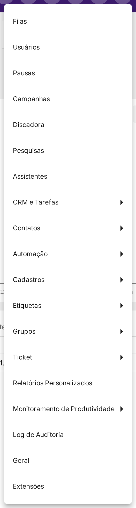
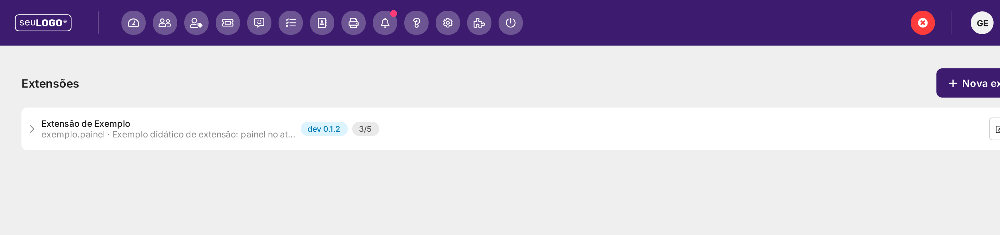
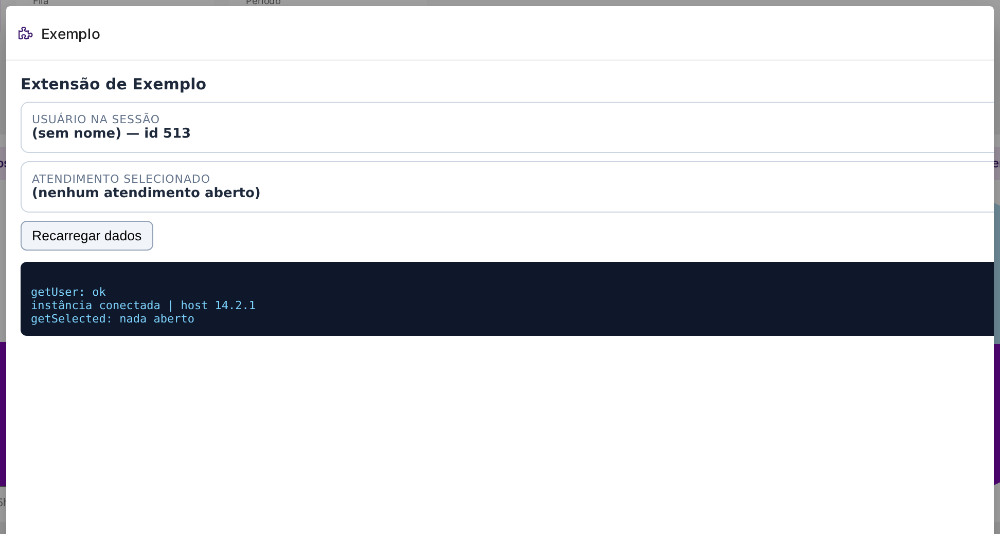

Extensões: Criar, Publicar e Instalar
O ciclo de vida completo das extensões em uma plataforma whitelabel: quem desenvolve, quem instala, como publicar, como distribuir para várias instâncias e como desfazer. Explicação com telas reais e o fluxo passo a passo.
1. Por que isso confunde tanto
A funcionalidade de Extensões separa deliberadamente três coisas que, no dia a dia, parecem uma só:
1. AUTORAR
Escrever a extensão (manifest + telas). Tela: Editor de Extensões. Quem: o desenvolvedor (perfil Administrador).
2. INSTALAR
Entregar a extensão nesta empresa. Tela: Extensões Instaladas. Quem: somente superusuário.
3. DISTRIBUIR
Entregar em várias empresas de uma vez. Local: painel do parceiro. Quem: parceiro.
Quem só tem o perfil Administrador vê apenas a etapa 1. A etapa 2 (o botão "instalar") pertence ao superusuário — e isso é garantido no servidor, não apenas escondido na tela: a chamada direta à API de instalação devolve 403 Proibido, inclusive para leitura.
2. O que é global e o que é local
Pense numa loja de aplicativos: o aplicativo existe uma vez só na loja (global); instalado no seu aparelho e no meu, são duas instalações diferentes (locais).
| Peça | Onde vive | É… |
|---|---|---|
| O aplicativo (manifest + arquivos) | Servidor central do produto (CDN) | Global — um identificador único no sistema inteiro |
O identificador (fornecedor.extensao) | No manifest, congelado na 1ª publicação | Global e imutável |
| A instalação (quem recebe, com qual configuração) | Dentro de cada empresa/instância | Local — uma por instância, independente |
A mesma extensão instalada em duas instâncias são duas instalações separadas, com configuração, público e dados separados.
3. Quem pode fazer o quê
| Ação | Onde | Quem |
|---|---|---|
| Criar, editar e publicar a extensão | Editor de Extensões (Configurações › Extensões) | Administrador — ou Supervisor com a permissão de editar extensões |
| Instalar, configurar, habilitar, desabilitar e remover | Extensões Instaladas | Somente superusuário (perfis internos 98 e 99) |
| Operar várias instâncias de uma vez (em lote) | Painel do parceiro | Quem tem acesso de parceiro |
4. Onde fica o editor (a tela de quem cria)
No menu Configurações, o item Extensões fica no fim da lista.

O editor lista as extensões autoradas nesta instância. Cada linha mostra o nome, o identificador, a versão que está no canal de dev e a cota de versões publicadas.

5. Criar a extensão (o que é preciso)
Uma extensão é apenas isto:
- 1 arquivo de identidade — o
manifest.json; - 1 ou mais arquivos de tela — normalmente um
index.html(com HTML/CSS/JS).
Manifesto mínimo, comentado:
{
"manifestVersion": 1,
"id": "fornecedor.extensao", // identificador GLOBAL: minúsculas, números e hífen;
// exatamente um ponto. Congela na 1ª publicação.
"version": "1.0.0", // Semver estrito X.Y.Z; na publicação tem de ser
// MAIOR que a última publicada.
"name": "Minha Extensão",
"description": "O que ela faz.",
"author": { "name": "Nome do autor" }, // ATENÇÃO: author é OBJETO, não texto solto.
"contributions": [ // ONDE a extensão aparece:
{ "id": "painel",
"type": "chatPanel", // abinha no painel lateral do atendimento
"title": { "pt-BR": "Meu Painel" },
"url": "index.html" }, // o arquivo TEM de existir na versão
{ "id": "menu",
"type": "topMenu", // item na barra superior
"title": { "pt-BR": "Minha Extensão" },
"presentation": { "mode": "dialog", "size": "lg" },
"url": "index.html" }
]
}
ext/kit-extensao-exemplo/ (manifesto + tela + guia passo a passo). Serve de ponto de partida e
pode ser instalado direto pela URL pública do manifesto.
Os tipos mais usados de ponto de encaixe:
| Tipo | Onde aparece |
|---|---|
chatPanel | Aba no painel lateral do atendimento |
topMenu | Ícone/item na barra superior (visível para todos os perfis) |
mainNav | Item na navegação principal |
chatMenu, msgMenu | Menus dentro do atendimento / da mensagem |
cartAction, cartFooterAction | Botões no painel de carrinho do atendimento |
callAction | Ação em uma chamada de telefonia |
url, icon e worker) tem de existir de fato na versão. Se citar e não existir, a publicação é recusada. E o icon é um arquivo da extensão (ex.: assets/icone.svg), não o nome de um ícone do sistema.
6. O fluxo completo (do zero ao uso)
- Criar a extensão — nasce um rascunho (o único estado editável).
- Escrever o manifest e os arquivos da tela.
- Conferir — o sistema aponta cada erro antes de publicar.
- Publicar — a versão vira imutável e é enviada ao servidor central (CDN). Publicar não coloca em uso.
- Apontar o canal — dev (teste) ou prod (produção). Só isto liga a versão.
- Obter a URL pública do manifest — é o endereço que se entrega para quem vai instalar.
- Instalar na instância — informando a URL, a configuração e para quem entregar.
- Conferir na tela do usuário-alvo.
7. Instalar na instância (a tela de quem entrega)
A instalação exige três decisões:
| Decisão | O que é |
|---|---|
| Qual manifest | A URL de prod (para valer) ou dev (para testar) |
| Com qual configuração | Campos que a própria extensão pede (ex.: uma chave de API). Campos marcados como secret são cifrados e nunca retornam em leitura. |
| Para quem | O filtro de público: por tipo de usuário, por pessoa, por fila ou por grupo |
A entrega é imediata: quem cai no filtro passa a ver a extensão sem precisar recarregar a página.
8. Como a extensão aparece para o usuário
Um item de barra superior aparece como um ícone novo, ao lado dos ícones nativos do sistema.
topMenu) aparece como um ícone próprio na barra superior.Ao clicar, a tela da extensão abre num diálogo — isolada num quadro próprio (por segurança) e já conectada à sessão do atendente.

9. Distribuir para outras instâncias
Como a plataforma é whitelabel, cada cliente possui a sua própria instância (com identidade visual e endereço próprios). A extensão, porém, é um artefato global:
- o aplicativo é publicado uma única vez, num endereço público, com um identificador único no sistema;
- qualquer outra instância instala o mesmo aplicativo, colando essa URL na sua tela de extensões instaladas;
- cada instalação permanece independente: configuração, público, chave e dados próprios;
- para levar a extensão a muitas instâncias de uma vez, usa-se o painel do parceiro (gestão remota, individual ou em lote).
10. Desfazer: desabilitar, remover, apagar
| Ação | O que acontece | Reversível? |
|---|---|---|
| Desabilitar a instalação | A extensão sai do ar na hora, mas configuração, filtros e chave são preservados | Sim — reabilitar |
| Remover a instalação | Apaga configuração local, segredos e chave; os usuários deixam de receber | Não |
| Apagar a extensão | Remove o aplicativo inteiro (todas as versões) do servidor central | Não — e afeta outras instâncias que a tenham instalado |
11. Armadilhas e boas práticas
authoré objeto ({"name": "..."}), não texto solto.iconé arquivo da extensão, não nome de ícone do sistema.- A 1ª publicação congela o identificador. Escolha bem o
id: depois só dá para mudar apagando e recriando. - Filtro vazio = ninguém. Nunca deixe o filtro de inclusão vazio esperando "todos".
- Teste no canal dev antes de mover o ponteiro de produção.
- Instale primeiro para um público restrito; é HTML de terceiro rodando na sessão dos seus atendentes.
- Segredos vão na configuração da instalação, nunca escritos no código da tela.
- Versão publicada é imutável. Para corrigir algo publicado, crie uma versão nova a partir dela (clonar) — não tente editar.
12. Perguntas frequentes
O Administrador consegue criar a extensão?
Sim — criar, editar e publicar é papel do Administrador (no Editor de Extensões). O que ele não faz é instalar na instância.
E se a empresa não tiver um superusuário acessível? Só resta instalar via integração (API/MCP)?
Na prática, sim: a instalação é do superusuário. Não havendo um login de superusuário na instância, a instalação é feita pela integração de configuração (MCP/API), que opera exatamente com esse perfil, ou pelo painel do parceiro.
A extensão que eu criei fica só na minha instância?
O aplicativo é global (fica num servidor central); as instalações é que são locais. Outra instância instala o mesmo aplicativo informando a URL do manifest.
Para atualizar a extensão, preciso reinstalar em cada empresa?
Não. Basta publicar a versão nova e mover o ponteiro de produção. Todas as instalações que usam aquela URL recebem a atualização automaticamente.
Instalei, mas a extensão não aparece para mim. Por quê?
Quase sempre é o público-alvo. Verifique se o seu usuário casa com o filtro (tipo de usuário, pessoa, fila ou grupo). Lembre-se: filtro de inclusão vazio não entrega para ninguém. E alguns pontos de encaixe só existem em certas telas (por exemplo, a aba de painel de atendimento só aparece para quem atende chats).